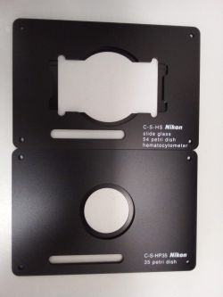
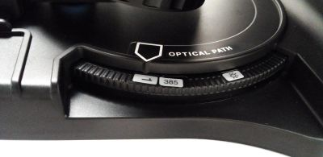
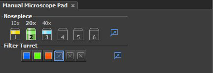
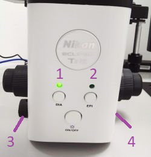
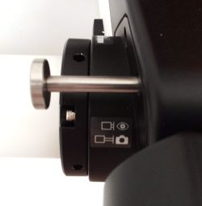
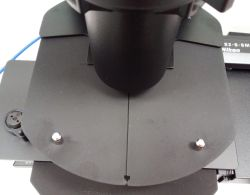
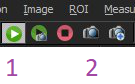
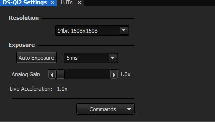
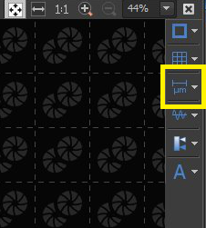
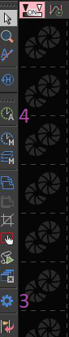

Switching On:
1. Turn on the PC, the microscope stand and the camera.
2. Log in as User and start NIS Elements D software.
Switching Off:
1. Switch off the camera and the microscope stand.
2. Transfer your data to OMERO or the shared drive.
3. Log off from the User account in Windows or shut down the PC.
4. Make sure you leave the microscope table clean. Spray with 70% ethanol and wipe any surfaces that could have been in contact with biological material. Do not leave any samples or any other belongings behind. Cover the microscope with the dust cover when not in use.
Microscope Operation:
The stage opening fits a multi-well plate; to accommodate smaller sample formats (slides, Petri dishes, ...), use one of the inserts provided.
Manually select the objective and the filter set you want to use. There are three filter sets labelled by the excitation wavelength (DAPI filter set with 385 nm excitation shown in the example) and empty positions for transmitted light marked by the light bulb symbol.
Update the selected objective and filter set in the software (to be correctly reflected in the image metadata). 20x objective and an empty filter set position (transmitted light) are selected in the example.
Use the buttons on the front panel of the microscope stand to select between transmitted light illumination (DIA - 1) or fluorescence excitation (EPI - 2) and to turn the illumination On/Off. The illumination intensity is set by the knobs on the left-hand side for transmitted light (3) and on the right-hand side for fluorescence excitation (4). When switching between filter sets, the microscope remembers the excitation intensity you have selected for each filter set (e.g. if you set 20% intensity for DAPI cube and then move to FITC cube and set 50% intensity, when you switch back to DAPI cube, the excitation intensity will return to 20%).
Use the lever next to the eyepiece to toggle between eyepiece and camera view.
When imaging fluorescence under normal ambient light in the room, close the cover above the stage to avoid increased background.
Camera control:
Start live acquisition by pressing 1 or capture a single image by pressing 2.
Set the camera exposure and gain in DS-Qi2 Settings tab (on the right-hand side from the main image panel). Short exposures and no gain (1x) are sufficient for transmitted light imaging. Longer exposures and gain can be used to capture weakly fluorescent samples.
The LUTs tab shows the image histogram and allows you to set the displayed image scaling, either manually or automatically by pressing 1 (one-time scaling optimalisation) or 2 (continuous scaling optimalisation during live capture). Note that the scaling does not affect the saved image, only its display on the screen.

The toolbar on the right-hand side of the main image panel allows you to add for example a scalebar to the image.
Captured images (not live image) are automatically saved to a selected folder. The default path is C:\USERS\USER\IMAGES. Create a sub-folder for your images in the IMAGES folder and set the path for saving images in the settings window opened by the cogged wheel icon (3) in the tool bar on the left-hand side of the main image panel.
